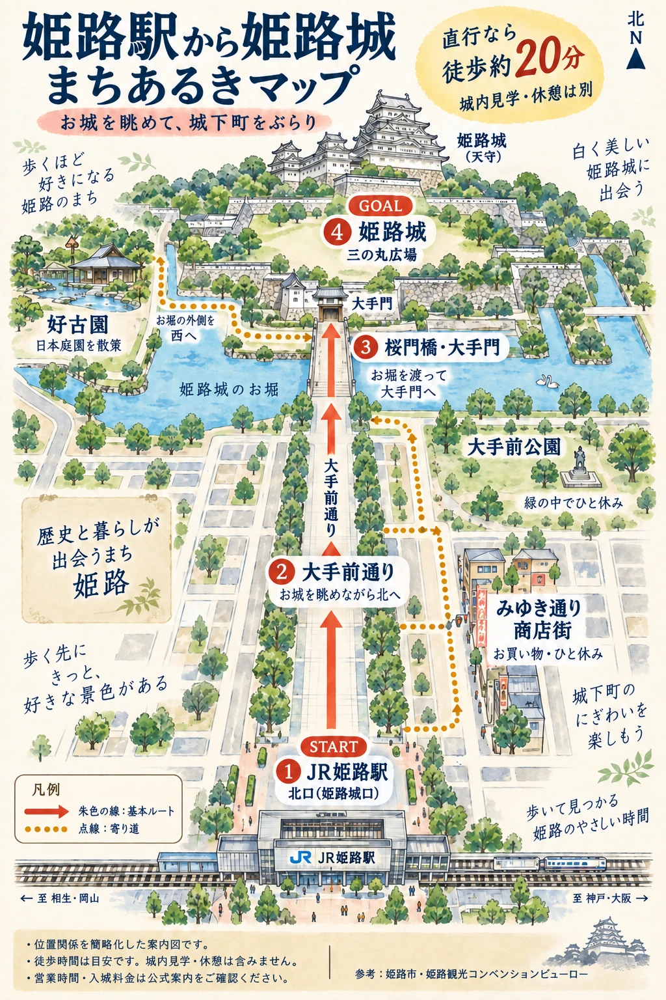
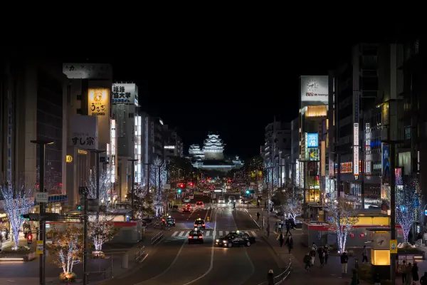

前往姬路城
- 地址
- 日本兵庫縣姬路市本町68番地
- 最近車站
- JR姬路站・山陽姬路站
- 步行時間
- 從車站步行約20分鐘，參觀城內、拍照及繞道的時間須另計。
步行時間參照姬路城官方交通指南（日文）。
一邊看着城堡，一邊從車站走近
從JR姬路站北口出站，沿大手前通向北，以城堡為方向，經櫻門橋及大手門前往三之丸廣場。

這是借助 AI 製作、保留日文標示的散步示意圖，建築形狀、比例及道路位置已簡化。四個編號地點如下方所述，實際路線請以地圖應用程式與現場指示為準。圖中的繞道景點包括御幸通商店街（みゆき通り）、大手前公園及好古園。
- JR姬路站北口
從姬路城口走向大手前通。
- 大手前通
向北走，欣賞城堡景色隨距離而改變。
- 櫻門橋・大手門
跨過護城河，進入城堡範圍。
- 三之丸廣場
先仰望天守拍一張照片。在前往收費入口之前，也可順道看看舊西大柱展示。
到訪前請查閱：姬路城官方「使用指南・交通」（日文）。開城時間、票價及可通行範圍等，請以最新官方資訊為準。
白鷺三十六景 / No.21
在姬路站，也能拍下一幅夜景
前往城堡之前，或散步回程時，可到姬路站北側的「Castle View」觀景台，眺望大手前通盡頭的姬路城。

第21景：站前高台，歲末光之道攝影：田路昌也 / / Castle View 觀景台
城市燈光的彼端，白色天守彷彿浮現眼前。白天走過的通往城堡之路，到了夜晚便成了另一幅照片。搭上回程列車之前，再向城堡望一眼吧。
照片中的行道樹燈飾為拍攝當時的狀況，亮燈安排隨季節及活動期間而異。